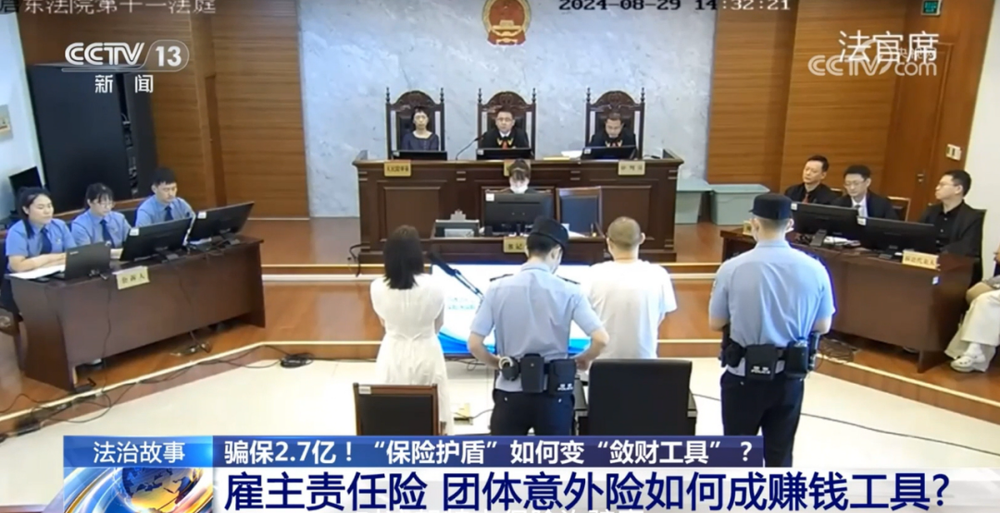
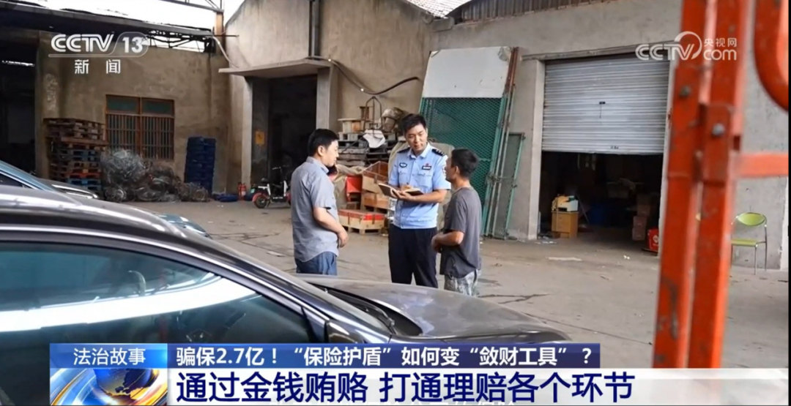

反问保险从业者：为什么会发生2.7亿如此巨额的保险诈骗？
从业这些年，见过骗保的歪路子不少，但江苏这起2.7亿的案子，还是让我在整理卷宗时倒吸了一口凉气——一条横跨9省16市的链条，把雇主责任险、团体意外险这俩本该护企业稳员工的“安全锁”，拧成了敛财的“绞索”。
先给没听过这案子的朋友补个背景：2024年9月宣判的主犯李某荣，原是保险代理公司员工。从2019年起，他带着老婆和一堆关联公司，把金属加工、船舶制造这些高危行业的员工“包装”成自家劳务派遣公司的人，重复投好几份保。员工轻微伤？花100多块治完，他掏钱做个“十级伤残”鉴定；一人受伤？三家保险公司同时理赔，本该拿6万的员工，最后被他哄着把18万理赔金转走。就这么干，涉案金额滚到了2.7亿。

为啥能骗到这个规模？不是骗子手段多神，而是每个环节都有漏洞。
最核心的，是骗子把“行业经验”玩成了骗保密码。李某荣不是门外汉，他太清楚雇主责任险的投保漏洞——高危行业员工流动性大，劳务派遣的用工关系本就容易模糊，伪造几份合同，就能把甲厂的工人“变”成乙公司的投保对象。更鸡贼的是，他专挑北京、深圳、广西这些异地保险公司投保，算准了跨区域调查成本高，保险公司大概率会委托第三方机构核查。而那些第三方的调查员，挣的是每个案子几百块的查勘费。李某花2000块就能买通一个公估查勘员，让其伤情造假、材料伪造的戏码一路绿灯。——我从业这些年见过不少懂行的“内鬼”，但他这种把把钻空子变成商业模式的，确实少见。
更值得警惕的是，这条链条上的“共谋者”太多，连受伤员工都成了被动的帮凶。有个工人脚拇指被砸伤，在家歇了俩月，老板叫他去签字时，他根本没看材料内容，就跟着指示画了押。后来19万理赔金到账，老板说“先打给我周转”，他就真转了。或许是觉得“老板给了赔偿，签个字而已”，或许是不懂理赔流程里的猫腻，这些员工没意识到，自己的签字成了骗子套钱的关键一环。而用工企业的老板更清楚其中的门道——反正理赔金不用自己掏，还能分一杯羹，何乐而不为？长此以往，老板们谁还会关注员工的安全问题，甚至会出现。本案中靠员工受伤发财的黑心老板。

而这一切能得逞，保险公司还是要检视自己的问题。保险公司的核保岗或许没细查：15个员工的小厂，每年出险5人以上，这种远超行业均值的“事故率”，本该是最显眼的警报。第三方调查机构更成了摆设——拿了好处就走个过场，连受伤员工的面都不见，光靠微信要张身份证就交差。这样的案子，是如何通过保险公司审核的？
银保监分局后来披露，串并案件时发现天津、重庆等地都有类似操作，可见这种“异地投保+贿赂核查”的套路，在一定程度上成了骗保团伙的“通用模板”。
说穿了，这2.7亿的骗保案，不是单一环节的失误，是“专业骗子+逐利企业+失职核查”的共同作用。雇主责任险的本质是风险共济，团体意外险是给员工的兜底保障，可在有些人眼里，却成了“轻伤重报、一单多赔”的提款机。
作为深耕理赔领域的老兵，我始终觉得：保险的信任，从来不是靠一纸合同撑起来的。企业投保时多留个心眼，别轻信“能多赔”的中介，干企业是为了挣合理合法的利润，而不是能把自己葬送掉的违法犯罪的钱。保险公司核保时把好关，别让异地投保成了“监管盲区”；咱们员工要是真受伤，电话回访时也多问一句“理赔金该打给谁，知不知道拒赔的赔款金额？”——毕竟，保险讲究的是诚信，守住规则，才守得住真正的保障。
本文由 ShawnCH（何智翔）轉發，透過微信聊天記錄自動提取並整理。 原文連結：https://mp.weixin.qq.com/s/6RQvPyrw9IuL04795d-rCA